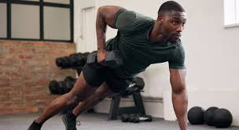
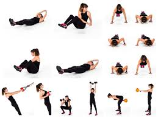
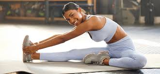
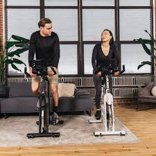

Our Workouts
Our workouts are designed to help you build strength, improve endurance, and enhance flexibility. Explore the various workout categories below to find the best routines tailored to your fitness level.
1. Strength Training 
Strength training focuses on building muscle and increasing strength through resistance exercises. This form of exercise is essential for enhancing metabolism, improving bone density, and promoting overall fitness.
- Deadlifts: Engage multiple muscle groups including the back, legs, and core. Aim for 3 sets of 8-10 reps.
- Bench Press: Target your chest, shoulders, and triceps. Perform 3 sets of 8-10 reps for muscle growth.
- Squats: A fundamental lower body exercise that also engages the core. Start with bodyweight squats before adding weights.
Tip: Always warm up before strength training and prioritize proper form to prevent injuries.
2. Cardio Workouts 
Cardiovascular workouts are crucial for improving heart health and burning calories. These workouts can range from moderate to high intensity, depending on your fitness level.
- Running: A highly effective cardio workout. Start with shorter distances and gradually increase as your endurance improves.
- Cycling: A low-impact cardio option suitable for all fitness levels. Aim for 30-45 minutes at a steady pace.
- HIIT (High-Intensity Interval Training): Short bursts of intense exercise followed by brief rest. A great way to boost cardiovascular fitness in less time.
Tip: Incorporate different cardio workouts throughout the week to maintain variety and keep it fun!
3. Flexibility and Mobility 
Flexibility and mobility exercises help maintain joint health, prevent injuries, and improve performance. Regular stretching can enhance your range of motion and alleviate muscle tension.
- Yoga: Combines flexibility, balance, and strength. Try various styles such as Hatha or Vinyasa for different benefits.
- Dynamic Stretching: Incorporate dynamic stretches into your warm-up routine to prepare your body for exercise.
- Foam Rolling: Use a foam roller post-workout to relieve muscle tightness and improve recovery.
Tip: Dedicate time to stretching after every workout session for optimal recovery.
4. Sample Weekly Workout Plan 
Follow this sample weekly workout plan to kickstart your fitness journey:
- Monday: Upper Body Strength
- Tuesday: Cardio (30 min running or cycling)
- Wednesday: Lower Body Strength
- Thursday: Flexibility (Yoga or stretching)
- Friday: Full-Body HIIT
- Saturday: Active Recovery (light walking, swimming)
- Sunday: Rest
Tip: Adjust the plan according to your fitness level and listen to your body's needs!
5. Join Our Fitness Community!
Subscribe to our newsletter to receive weekly workout tips, nutrition advice, and exclusive fitness content. Together, we can achieve your fitness goals and support each other on this journey!